JavaFX Paint, Effect, Animation
JavaFX Paint
在 javafx.scene.paint.* 裡有許多為 JavaFX 塗上顏色的類別。
Color
JavaFX 有自己的 Color 類別，提供多種產生顏色的方式：
Color.常數顏色名稱
Color.hsb(double hue, double saturation, double brightness)
Color.rgb(int red, int green, int blue)
Color.color(double red, double green, double blue, double opacity)
Color.web(String colorString)
可用的常數顏色請參考 Java API Specification 的 Color (JavaFX 8)，值得一提的是 Color.TRANSPARENT 代表透明色。
hsb() 可以使用色相、飽和度、亮度決定顏色，rgb() 可以使用紅、綠、藍三原色決定顏色。color() 相當於 JavaFX 用來支援 sRGB 的新功能，web() 可用符合 HTML 和 CSS 的 RGB 寫法指定顏色，例如 "#ff6633" 和 "f63"。
底下是 Color.web() 設定文字顏色的範例：
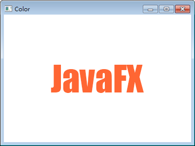
LinearGradient
如下建構式可以產生「線性漸層」的色彩效果：
LinearGradient(double startX, double startY, double endX, double endY,
boolean proportional, CycleMethod cycleMethod, Stop... stops)
範例：
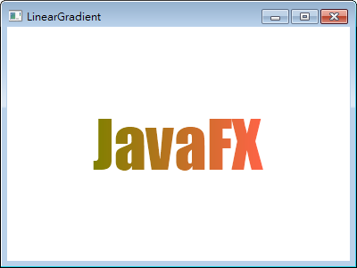
RadialGradient
如下建構式可以產生「放射漸層」的色彩效果：
RadialGradient(double focusAngle, double focusDistance,
double centerX, double centerY, double radius,
boolean proportional, CycleMethod cycleMethod, Stop... stops)
範例：
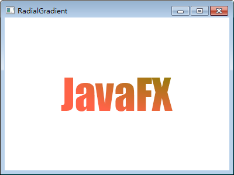
ImagePattern
你可以使用如下建構式，製造「循環上色」的效果：
ImagePattern(Image image, double x, double y,
double width, double height, boolean proportional)
底下範例先在 JavaFX 產生一個圓形，但塗上的不是顏色，而是填滿 ball.png 圖片。
ball.png
Main.java
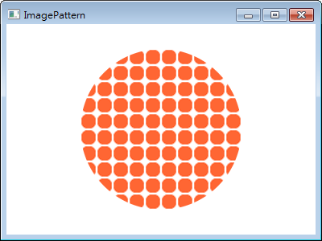
JavaFX Effect
在 javafx.scene.effect.* 裡有許多為 JavaFX 產生靜態特效的類別：
Blend(BlendMode mode, Effect bottomInput, Effect topInput)
Bloom(double threshold)
BoxBlur(double width, double height, int iterations)
DisplacementMap(FloatMap mapData, double offsetX, double offsetY,
double scaleX, double scaleY)
DropShadow(double radius, double offsetX, double offsetY, Color color)
GaussianBlur(double radius)
Glow(double level)
InnerShadow(double radius, double offsetX, double offsetY, Color color)
Lighting(Light light)
MotionBlur(double angle, double radius)
PerspectiveTransform(double ulx, double uly, double urx, double ury,
double lrx, double lry, double llx, double lly)
Reflection(double topOffset, double fraction,
double topOpacity, double bottomOpacity)
SepiaTone(double level)
Shadow(BlurType blurType, Color color, double radius)
別看到落落長的參數就嚇跑了，其實大多數類別直接 new 出一個不帶參數的物件，靠預設值就能產生效果！想細部調節效果再使用上面帶參數的建構式，甚至這些建構式參數都各自有對應的 setXXX()，先建立一個不帶參數的物件，再一一設定也可以，不用真的把這堆建構式記下來～
只是特效一經套用就很少事後修改，所以直接丟建構式比較方便，本文才列出如上密密麻麻的清單。
JavaFX Effect 其實非常簡單好用，所以讓人愛不釋手，例如 Reflection 類別：
直接 new 給 setEffect()，漂亮反射的效果就出來了：
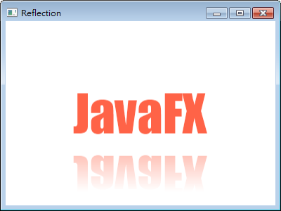
其它同樣直接 new 出來就很明顯的特效如下：
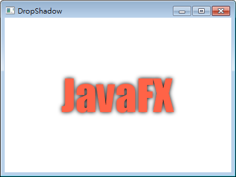
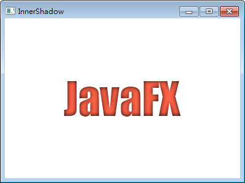
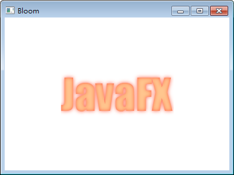
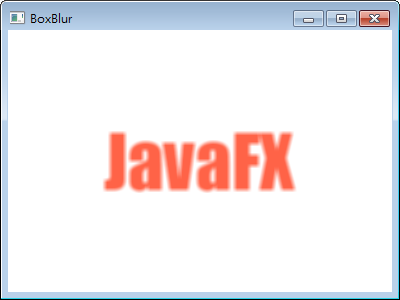
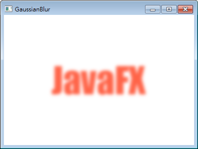
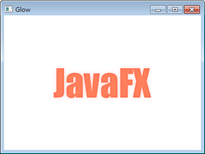
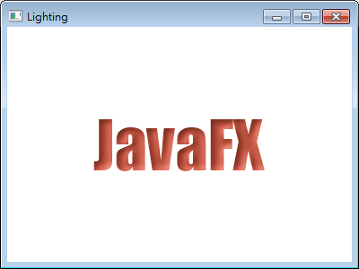
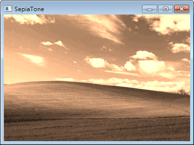
要注意的是，有些特效的顏色是黑色，文字或圖像也是黑色時，直接 new 出物件看不出效果，這時就要設定參數使用其它顏色。
其它需要修改參數才有顯著效果的特效，或者需要搭配其它物件操作複雜的特效，分別示範於下…
Blend
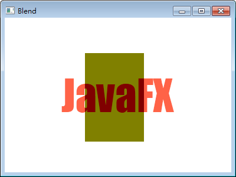
這個特效相當於影像處理的「遮罩」。
首先使用 BlendMode 的 ADD、BLUE、COLOR_BURN、COLOR_DODGE、DARKEN、DIFFERENCE、EXCLUSION、GREEN、HARD_LIGHT、LIGHTEN、MULTIPLY、OVERLAY、RED、SCREEN、SOFT_LIGHT、SRC_ATOP、SRC_OVER 指定演算法，第二參數是希望疊在下面的圖層，第三個參數是希望疊在上面的圖層，new 出物件就會將三種特效依指定演算法混合。
DisplacementMap
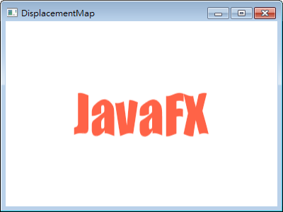
這個特效相當於影像處理的「扭曲」，需要搭配 FloatMap 使用。
就像 StringBuilder 不斷透過 append() 將字串塞進去，最後再將緩存的資料一次丟出來，FloatMap 則是不斷透過 setSamples() 將 float 型態的小數塞進去，最後再將緩存的資料一次丟給 DisplacementMap 使用。至於 FloatMap 緩存的資料是寬度和高度。
MotionBlur
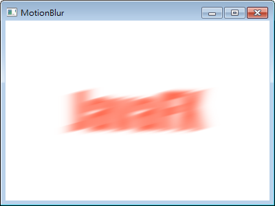
這個特效相當於影像處理的「動態模糊」，第一個參數是角度，第二個參數是半徑。
PerspectiveTransform
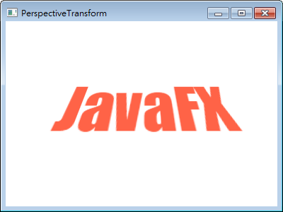
這個特效相當於影像處理的「變形」。
方法名稱中 U 是 upper、L 是 lower、l 是 left、r 是 right，換句話說 setUlx() 表示設定左上 X 座標。
使用時要注意的是，像 Urx 設得比 Ulx 小，會變成頂部沒有水平線，或者 Uly 設得比 Lly 低，會變成左邊沒有垂直線，等於設定錯誤，不會顯示出來。
我個人習慣先以 Ulx 和 Urx 設定上方水平線，然後 Llx 和 Lrx 設定下方水平線，接著 Uly 和 Lly 設定左邊的垂直線，最後 Ury 和 Lry 設定右邊的垂直線。
Shadow
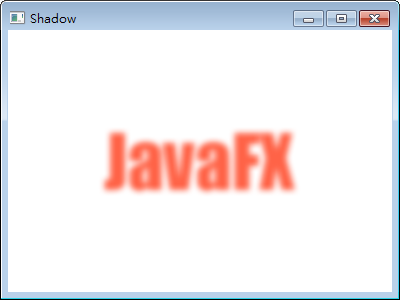
想自訂特效時才會用到這個類別。
第一個參數是模糊的演算法，可以使用 BlurType 的 GAUSSIAN、ONE_PASS_BOX、THREE_PASS_BOX、TWO_PASS_BOX 切換，第二個參數是顏色，第三個參數是半徑。
JavaFX Animation
有 FadeTransition、FillTransition、ParallelTransition、PathTransition、PauseTransition、RotateTransition、ScaleTransition、SequentialTransition、Stroke、Timeline、Translate 動態效果可用。以 FadeTransition 為例：